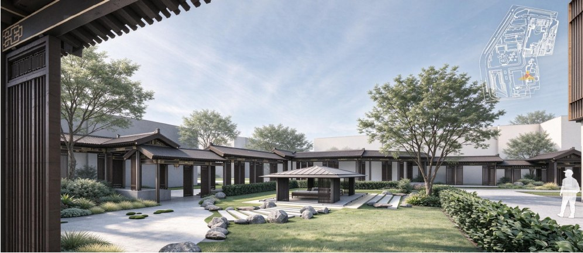
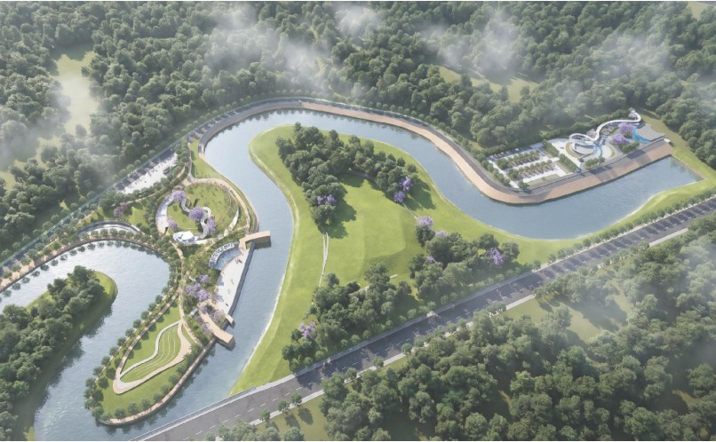
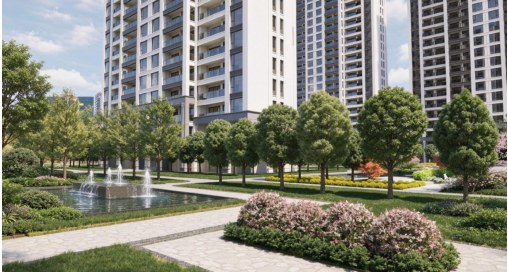
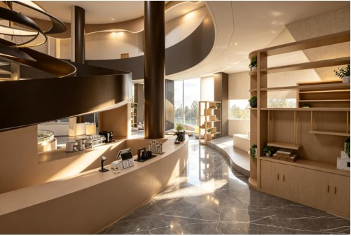

合肥大成殿地块针灸式微更新
历史老城片区更新 · 个人课程设计
从场地出发，关注人与环境的关系。
以设计回应空间、生活与时间。

从城市微更新到日常生活空间，探索场地、功能与使用体验之间的联系。

历史老城片区更新 · 个人课程设计

城市滨水空间 · 小组项目

存量住区全龄友好更新 · 小组项目

室内空间设计 · 个人课程设计
我是毕晓春，环境设计专业学生。关注城市更新、景观设计与公共空间，尝试从场地现状和人的需求出发，寻找兼顾体验与落地的设计方式。
合肥工业大学 · 环境设计
本科，2023.09—2027.06
SketchUp · AutoCAD · Photoshop
Lumion · Enscape
感谢浏览。欢迎查看完整作品集，了解更多设计过程与项目细节。